In this section, we replicate a simple version of the flow-matching model used in Part 1, training a small model to generate handwritten digits from noise.
Our first iteration of the model is a classical UNet that applies convolutions to an input of pure noise and downsamples it, then applies transpose convolutions and upsamples it such that it should generate a handwritten digit.
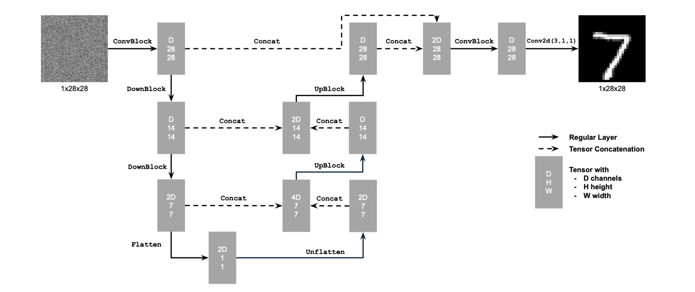
We train this model by feeding it noised hand-written digits as input x, with the target output y being the denoised original hand-written digit.
We use noise level 0.5, but our hope is that the model can predict from all levels of noise. Here are some examples of noised digits at different levels (noise goes from 0 to 1).
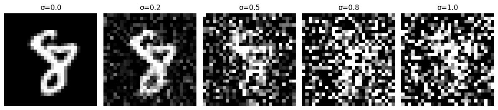
We train our model for 5 epochs using AdamW optimizer with 1e-4 learning rate and it achieves this training loss curve:
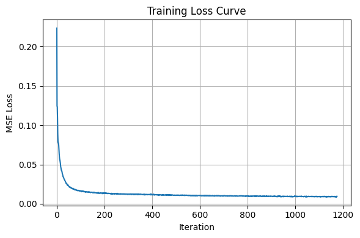
After one epoch of training, we already see pretty decent denoising when we feed it noised digits at noise = 0.5.
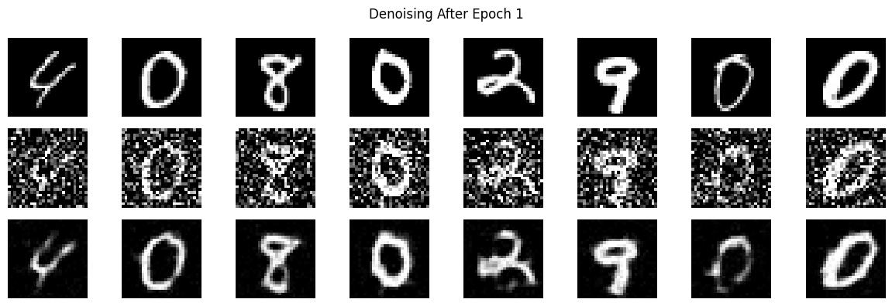
And after 5 epochs the performance is quite good, both for training and test images.
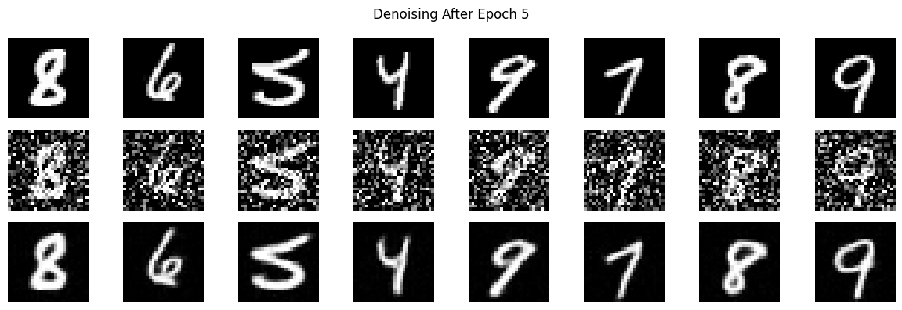
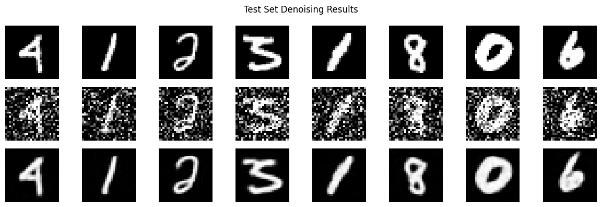
Interestingly, while performance decreases when we try to use this model on noised images with noise > 0.5, performance stays around the same for lower noise levels.
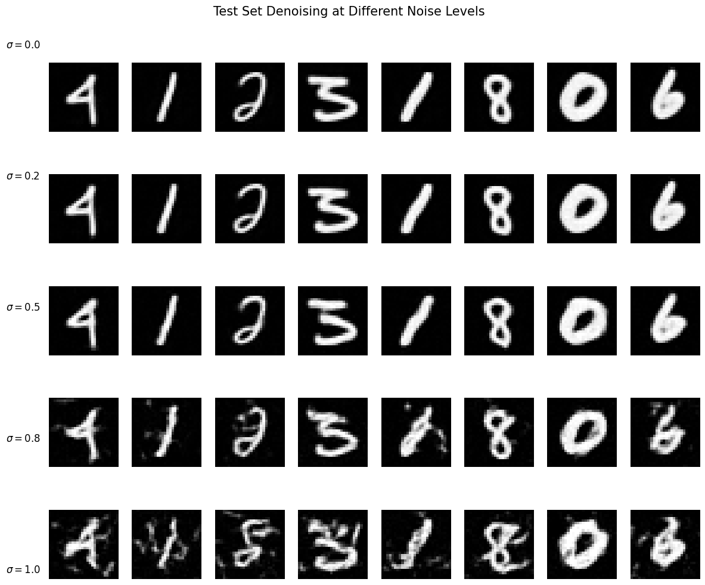
Recall that our goal is to diffuse MNIST-like images from pure noise. As an experiment, let's try to train the model using pure noise as input and hand-written digits as labels. Note that the pure noise does not actually correspond to the digit. We will use MSE to train this model.
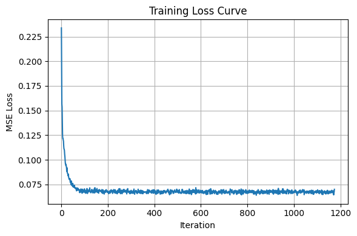
After one epoch, we already see the model starting to converge to some single point. Below are 16 samples generated from feeding the model pure noise.
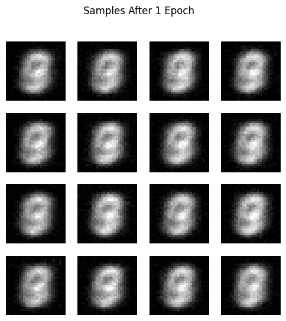
And after 5 epochs we see that the model has almost fully converged to always give the same answer. Why does this happen? Since we are using MSE loss, the model learns to predict the point that minimizes the sum of squared distances to all training examples (i.e. the optimum for the MSE optimization problem)! Thus, what we are seeing here can be understood as a kind of average of all the digits in the training set.
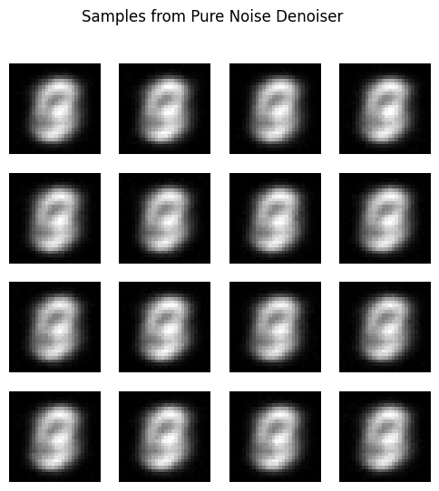
Part 2.B - Time-Conditioned UNet = Flow-Matching
Recall that diffusion is essentially taking steps from pure noise to the image manifold. We conceptualize this path through time and seek to calculate the "velocity" of the noise as it iteratively denoises into an image on the image manifold, i.e., at a particular time-step, we have an intermediate image xt, and would like to predict the velocity with our U-Net model (feeding it t and xt).
Additionally, the velocity can be calculated as follows: xt is derived via a linear interpolation between pure noise (x0) and x1 (clean image from our dataset) with the equation (1-t)*x0 + t*x1 -- i.e. if t=0, we get pure noise, and if t=1, we get a clean image, and everything in (0, 1) are our intermediate steps.
Thus the velocity is the derivative of xt with respect to time t, which works out to be x0 - x1. Therefore, we compute the loss on the MSE between (x0 - x1) and our predicted velocity generated by the model given xt and t.
We modify our model to take in as additional input time t, processing it through fully connected blocks and multiplying the outputs on the upsampling portion of the model with them.
Now, instead of predicting a clean image, the model should predict the velocity describing how to move from x0 to x1 (x0 - x1), given xt and t.
Again, we train our model for 10 epochs, this time with lr=1e-2 and exponential scheduling:
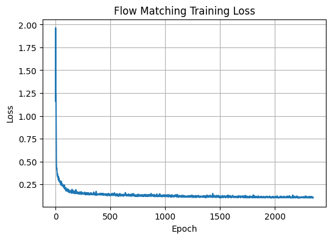
To sample from the model, we use the equation x = v*t from physics to iteratively step from pure noise to the image manifold. We take T small timesteps of size (1/T), starting from a noisy image xt (same noise level as x0 initially). At each timestep, we update our intermediate image xt by adding the distance traveled from one timestep (= v*t), with t being (1/T) and our predicted v being model(xt, t).
We can see the denoised images evolving when we sample after the first, fifth, and last epochs. Towards the end, the model generates results that look like hand-drawn symbols and are much less noisy than at the beginning, but we can see that the model is still a bit conufused about what digits should look like.
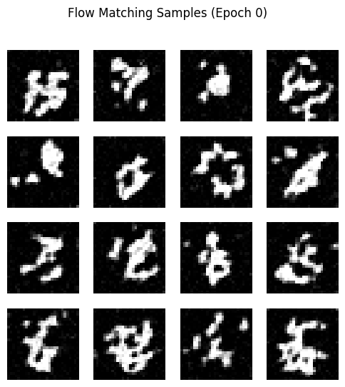
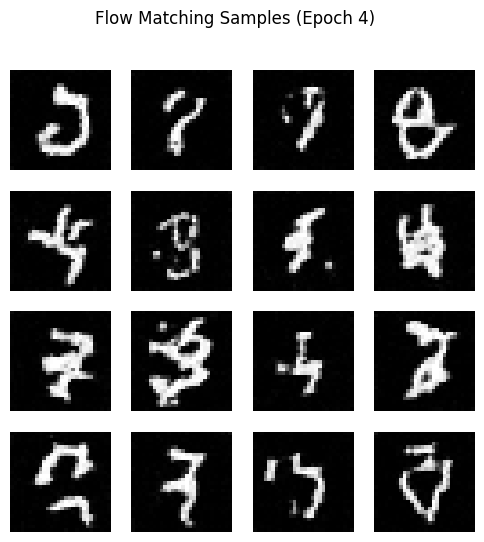
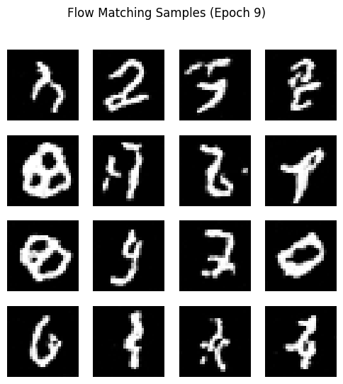
Part 2.C - Adding Class Conditioning
As we saw from the previous section, the model needs some additional guidance to distinguish between digits, as it's outputting digit-like symbols that don't really match to real numerals.
Let's add class conditioning to our time-conditioned flow matching UNet to see if we can alleviate this issue.
Again, we train for 10 epochs with lr=1e-2 and exponential scheduling.
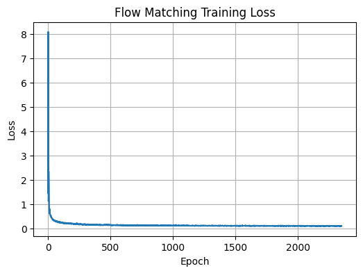
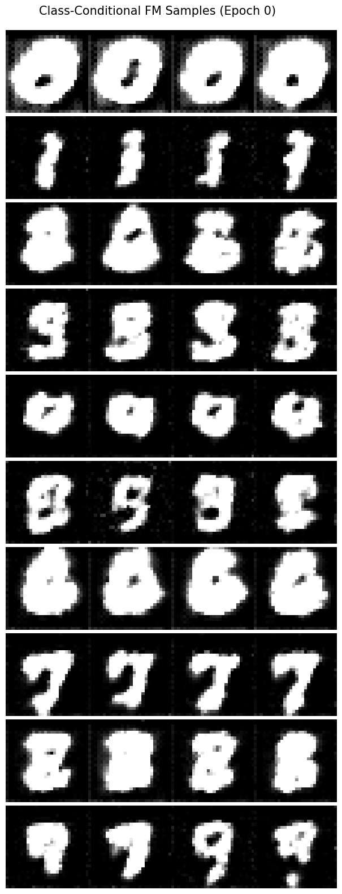
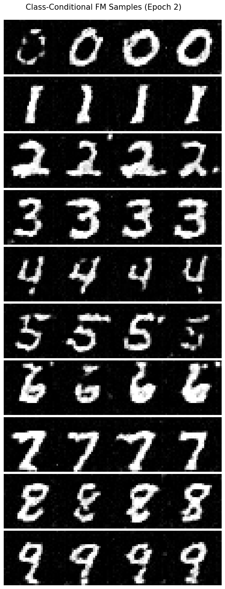
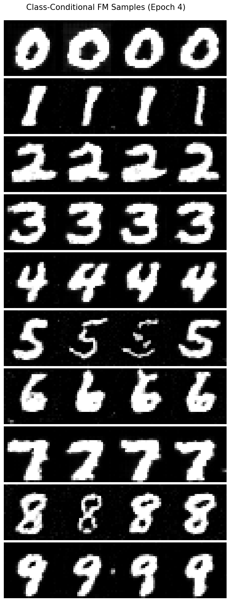
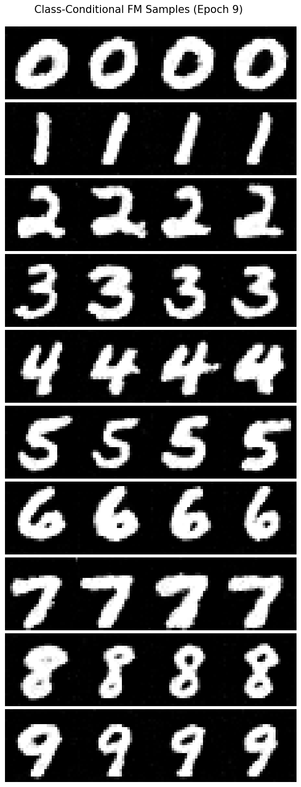
Finally, we can also get rid of the exponential scheduling and use a lower learning rate (2e-4) to get even better results. Note -- sampled with guidance rate 0.3 instead of 0.5 above.